A walk through JuliaBase¶
The demo site¶
At https://demo.juliabase.org, a demo of JuliaBase is installed so that you can play with it a little bit. You can log in with various accounts with different levels of permissions, add samples, processes, tasks etc., have a look at sample data sheets or a lab notebook, and much more.
However, since this site is accessable to everyone, it may become chaotic over time. In order to prevent that, all the data is reset every hour on the hour. So, don’t be surprised if you have to log in again after some time – all session data is reset, too. There is nothing to worry though as you may log in as often as you wish.
This demo site is also the default target of the remote client code shipped with JuliaBase. You are encouraged to use the demo as a test bed for your client code.
The demo accounts¶
The demo site is the JuliaBase installation of the “Institute of Nifty New Materials” (INM). It’s a very small institute with only six employees. All accounts have the password “12345”.
The boss¶
Sean Renard (s.renard) is the lead scientist and director of this institute. Accordingly, his JuliaBase account allows him to view all samples, but he has got other privileges, too. More about that later.
The technical staff¶
Nick Burkhardt (n.burkhardt) is a technician in the INM for a very long time. He is responsible for the PDS setup (photothermal deflection spectroscopy), a measurement setup. He performs measurements for researchers. He would never let another person use his PDS.
Hank Griffin (h.griffin) is also a technician. He is responsible for the solarsimulator, another measurement setup. He performs measurements for researchers, but after proper instructions by him, other people may use the apparatus, too.
Eddie Monroe (e.monroe) is a deposition operator. This is a technician who manages a deposition system, in his case, the cluster tool deposition. Here too, other institute members may use this system after proper instructions.
The scientific staff¶
Rosalee Calvert (r.calvert) is a tenure scientist and creates samples by herself in the 5-chamber deposition setup. Currently, she’s the only one using this setup. Afterwards, she measures the samples in the solarsimulator. His current project is a cooperation with the University of Paris.
Juliette Silverton (j.silverton) is a PhD student with a lot of work. Thus, she is unable to do sample preparation and measurements herself, and let others do it. Consequently, she makes intensive use of JuliaBase’s “task lists” feature in order to commission the work.
Rosalee: The everyday work¶
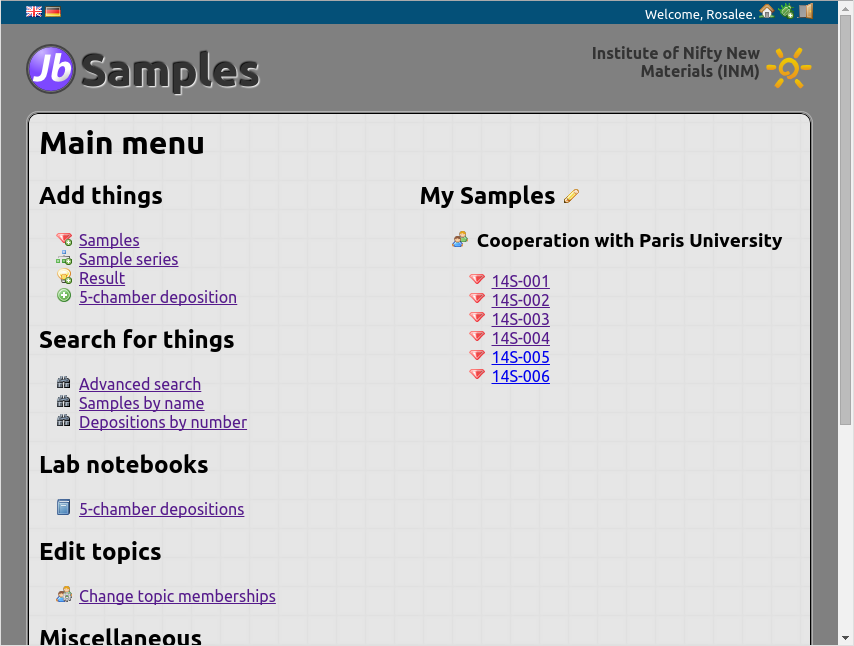{kind=link}
Log in as r.calvert, the typical ordinary user. We will see how she gets her work done.
The “My Samples” list¶
In the main menu, you can see Rosalee’s “My Samples” on the right hand side.
This list usually contains not all samples of a user but only those that are
currently of interest to him/her. Still, this list may become quite long,
and is therefore structured by topics and sample series. You may click on
the bullet icons ( or
or  ) in the list to fold and
unfold sections that you want to hide.
) in the list to fold and
unfold sections that you want to hide.
Topics¶
One sample usually belongs to exactly one topic. This helps to organise samples. For one thing, one can give topics expressive names, which makes the samples’ purpose clear. In Rosalee’s list, all samples belong to the topic “Cooperation with Paris University”.
But even more important is that topics define who can see the sample. The prime directive in JuliaBase is: You can only see samples of your topics.
If a sample is in no topic, it is completely unprotected. Everyone can see it and take possession of it. There may be use cases for that but usually, you should put all your samples in topics.
People can be in an arbitrary lot of topics at the same time, but a sample is in exactly one topic. It may change it during its lifetime, though. Senior team members may have the permission to see all samples, whether in their topics or not. Sean Renard is such a person.
Sample data sheet¶
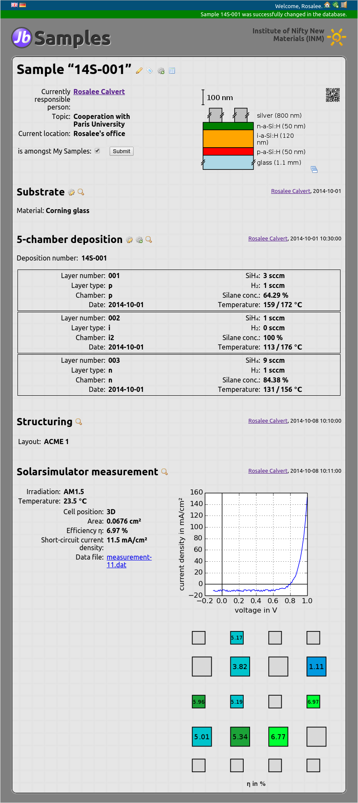{kind=link}
Let’s visit a sample by clicking on “14S-001”. You see its data sheet. At the top, it contains some general information like the currently responsible person and the topic. Then, you see a list of everything that has been done with this sample, in chronological order. It starts with the substrate, is continued with the deposition of the silicon layers, and ends with a measurement in the solar simulator.
Every such step is called a “process” in JuliaBase. Even the “Substrate” is a process, albeit a slightly odd one. Every process has an operator and a timestamp. You can fold processes that would otherwise clobber the data sheet by clicking on the heading.
The main work when adapting JuliaBase to a new institute is programming all the processes that the institute needs. The solarsimulator measurement at the bottom is a good example why it is worth the effort. Just click on the colored squares, and you see how the data and the plot change immediately. Such features are lacking in off-the-shelf databases. This high degree of adaptability and flexibility is the primary strength of JuliaBase.
Let’s scroll back to the top. You see a schematic cross section of the sample, called an “informal stack” because it may not be totally accurate. This is not part of JuliaBase’s core because it may not be useful for every institute. But it’s part of the source code and you may use it. If you click on it, you get it as a PDF. This is also true for all plots in JuliaBase.
Edit samples¶
You can edit a sample by clicking on the pencil icon  next to the
sample’s name. “Editing a sample” refers only to the data at the top of the
data sheet. In particular, no processes are affected. Very often when you
change somethin in JuliaBase, you have to describe your changes shortly at the
bottom right. It may be tedious sometimes, but it may be very helpful to
others who get notified by your changes.
next to the
sample’s name. “Editing a sample” refers only to the data at the top of the
data sheet. In particular, no processes are affected. Very often when you
change somethin in JuliaBase, you have to describe your changes shortly at the
bottom right. It may be tedious sometimes, but it may be very helpful to
others who get notified by your changes.
Add processes¶
Also on the top of the sample data sheet there is the gear icon  , which is to append a new process to the sample. If you click on it, you
are asked which kind of process you’d like to add. Let’s have a look at two
possibilities: Splitting and result process.
, which is to append a new process to the sample. If you click on it, you
are asked which kind of process you’d like to add. Let’s have a look at two
possibilities: Splitting and result process.
Split a sample¶
If you split samples into pieces, you surely want to keep track of that. For
doing so, you click on the gear icon and select “sample split”.
Then, you can enter the new names of the samples. Usually, they extend their
parent’s name. When looking at a sample’s data sheet, you also see all
processes of the parents.
Result process¶
Result processes, often simply called “result”, are a handy ad-hoc way to append something to a sample’s data sheet. If you want to add a measurement result for which no dedicated process has been programmed so far, or if you want to add a plot, a picture, or a comment, then create a result. It’s the Swiss-Army-knife process if nothing else fits. Because it’s so flexible, be careful not to have spelling errors in order to keep searching and exporting easy.
Advanced search¶
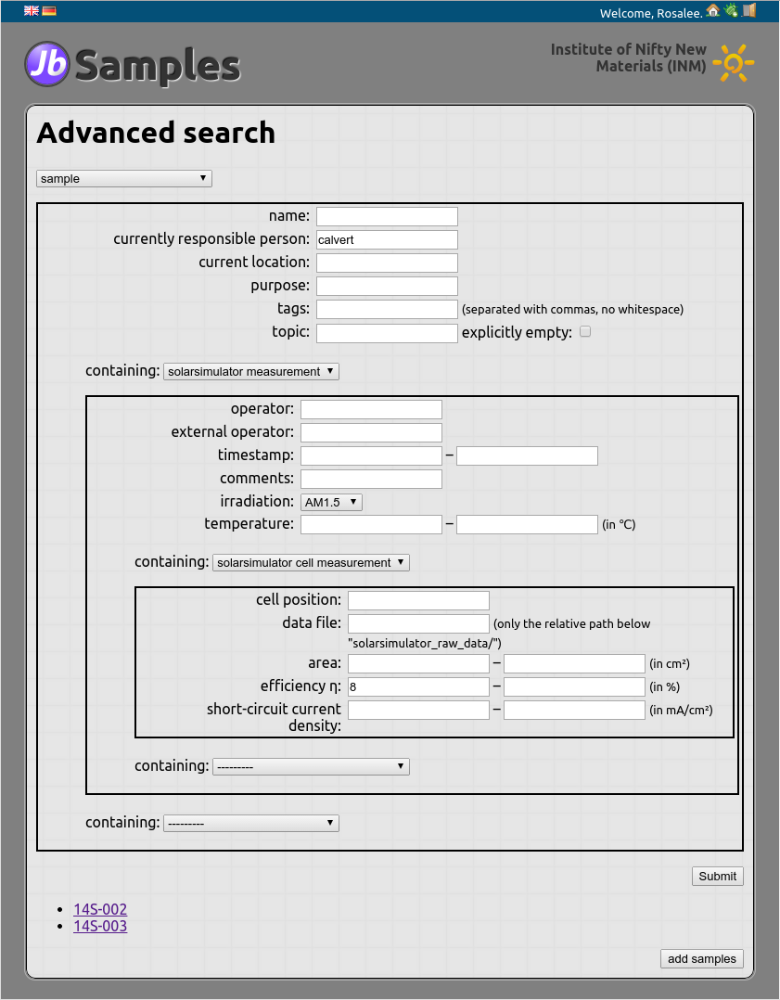{kind=link}
Rosalee wants to see her best samples. For this, go back to the main menu (the
house icon  on the top right, or the big text “Samples”) and select
“Search for things – Advanced search”. Now, perform the following steps,
clicking on “Submit” after each step:
on the top right, or the big text “Samples”) and select
“Search for things – Advanced search”. Now, perform the following steps,
clicking on “Submit” after each step:
- Select “sample” in the drop down menu.
- Enter “calvert” in “currently responsible person” and select “solarsimulator measurement” in the drop-down menu “containing”.
- Select “AM1.5” in “irradiation”, and select “solarsimulator cell measurement” in the inner drop-down menu “containing”.
- Enter in “efficiency η“ the value “8”.
You get the result as in the image next to this text: Two of her samples match the criteria, namely “14S-002” and “14S-003”. This means, both samples have at least one solarsimulator measurement under AM 1.5 irradiation, with at least one cell with an efficiency greater than 8%.
Note
You may bookmark advanced searches and revisit them as often as you wish. Every time, you get new results for your old search criteria.
Data export¶
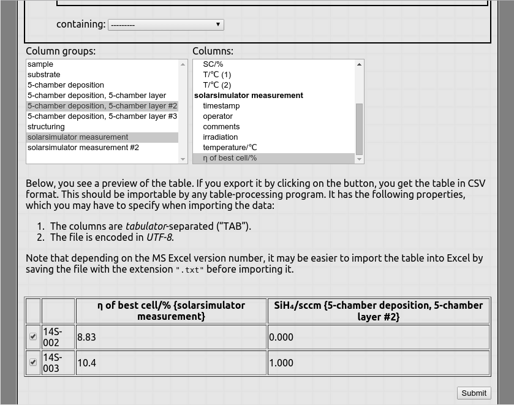{kind=link}
Rosalee needs the data in her spreadsheet program. So, click yet another time on “Submit”. You may select the processes on the sample data sheet that should be included into the output. Select the second layer of the 5-chamber deposition and the first solarsimulator measurement. Click on “Submit”. Now, you may select the fields of these processes that should be included into the output. Select “\(\mathrm{SiH}_4\)/sccm” (the silane flux, by the way) of the layer and “η of best cell/%” of the solarsimulator measurement. Click on “Submit”.
The result is shown in the screenshot. The table comprises all the data that will be included into the output. Click one last time on “Submit”, and you can download that table as a CSV file ready-to-be-opened with your favourite spreadsheet program. When opening it, take care that columns are separated only by tabstops.
Add samples¶
From the main menu, you can click on “Add things – Samples” to add samples. Note that this page is quite institute-specific. Your institute may not have the concept of substrates, for example, and surely not something like a “cleaning number”. Anyway, you must enter the number of samples as well as their current location. Add a couple of samples, but don’t rename them yet.
Fresh samples have a provisional name in JuliaBase. It looks like “*00034”, i.e., an asterisk followed by a five-digit number. Never use these names on sample boxes or in lab notebooks. They are meant to be replaced by a real name as quickly as possible. Rosalee’s samples get their names after the first deposition of silicon, so let’s do that now.
Lab notebooks¶
From the main menu, open the lab notebook of the five-chamber deposition. You
see six depositions of October 2014. Select one of them. JuliaBase shows you
a page containing the details of only this deposition. At the top of it, click
on the gear icon in order to duplicate this deposition.
Add new deposition process¶
Rosalee duplicates old depositions because she doesn’t vary much. This way, she adds new depositions without fuss. In the page for the new deposition, she only has to select the samples for the deposition (which are the samples recently added, with these “*…” names), change some other things that were different in this run, and click on “Submit”.
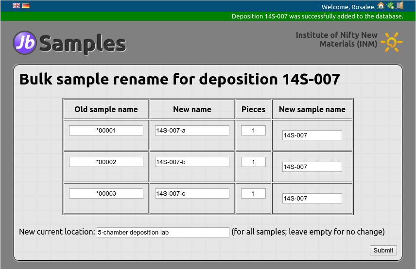{kind=link}
Now, its a habit in the Institute of Nifty New Materials to give the sample the same name as the deposition. Therefore, immediately after having added the deposition, you are redirected to a page where you can check and change the new sample names. JuliaBase suggests the deposition’s name for all samples (in the case of the screenshot, three of them). However, names must be unique, so Rosalee appends “…-a”, “…-b”, and “…-c” (see screenshot, second column). Click on “Submit”, that’s it! The newly deposited samples appear with their proper names under “My Samples” on the main menu page.
Of course, your institute may have another workflow without such renaming, which is a bad idea anyway – names in a database should never change. So you can just leave out the renaming page in your own code.
Change permissions for processes¶
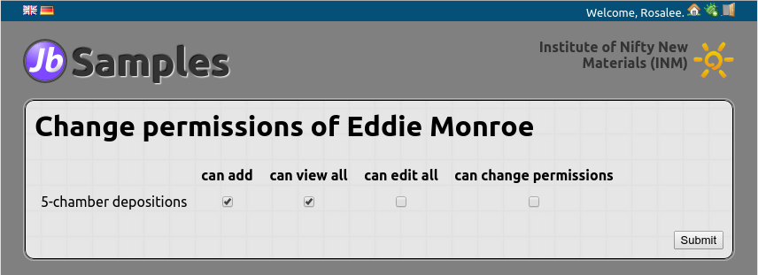{kind=link}
As already mentioned, Rosalee is responsible for the 5-chamber deposition setup. But let’s assume Eddie wants to do such depositions, too, and gets an introduction? Then, he should also be allowed to add such depositions to JuliaBase.
Rosalee visits “Miscellaneous – Permissions to processes” from the main menu, selects Eddie from the drop-down menu and clicks on “Submit”. She puts tick marks into the first two checkboxes and clicks again on “Submit”. Now Eddie has got the following additional permissions:
- He can add new 5-chamber depositions.
- He can edit his own 5-chamber depositions (those that he’s the operator of).
- He can view all 5-chamber depositions. In particular, this implies that he can view the lab notebook.
Claims of samples¶
There is one of Juliette’s samples that Rosalee wants to acquire possession of. In principle, Juliette could set the sample’s “currently responsible person” to Rosalee, but Juliette is reluctant to do work that also other could do (more on that later).
Moreover, sometimes you must acquire possesion of orphaned samples; or of samples that were imported as legacy data without any ownership information. In these cases, it is really necessary to be able to claim samples. This is done in two steps.
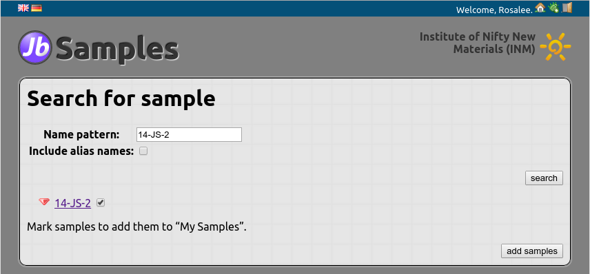{kind=link}
Adding a sample to My Samples¶
Rosalee clicks on “Search for things – Samples by name” in the main menu and enters the name “14-JS-2” into the field. She puts a tick into the checkbox and clicks on “add samples”. This way, the sample 14-JS-2 is added to Rosalee’s “My Samples”.
The actual claim¶
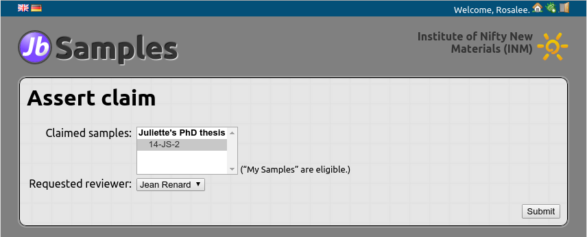{kind=link}
Next, Rosalee visits “Miscellaneous – Sample claims” from the main menu, and on the next page, selects “existing samples”. Here, she selects 14-JS-2, and “Sean Renard” as the reviewer of the claim (he’s the only choice anyway). That’s it. The next page lets Rosalee review the claim. But now she has to wait for Sean (who got an automatic email) for approving it.
Juliette: The assigner of work¶
Juliette has a lot to do and cannot deal with such things as sample preparation and characterization itself. Thus, she assigns tasks to other people and analyses the results. Logout and re-login as j.silverton/12345.
Adding a task¶
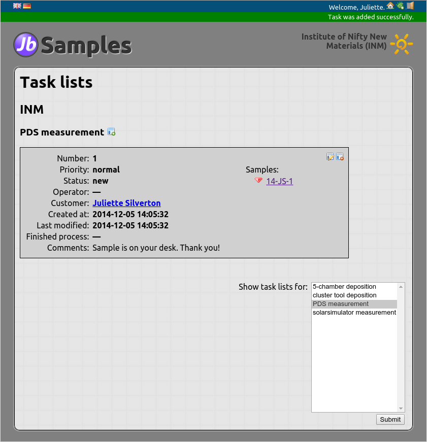{kind=link}
Let us assume Juliette wants to have a PDS measurement for her sample 14-JS-1. Therefore, visit “Miscellaneous – Task lists” from the main menu. There, first set up the page by selecting the processes that you’re interested in. Select “PDS measurements” and click on “Submit”.
Now you add a new task for the PDS setup by clicking on the plus icon  for PDS measurements. Select the sample 14-JS-1, click on “Submit”
and you’re finished. You can see the new task in the list of tasks. There,
you may withdraw it by clicking on the minus icon , or edit
it by clicking on the pencil icon
for PDS measurements. Select the sample 14-JS-1, click on “Submit”
and you’re finished. You can see the new task in the list of tasks. There,
you may withdraw it by clicking on the minus icon , or edit
it by clicking on the pencil icon  .
.
Sending a sample to another user¶
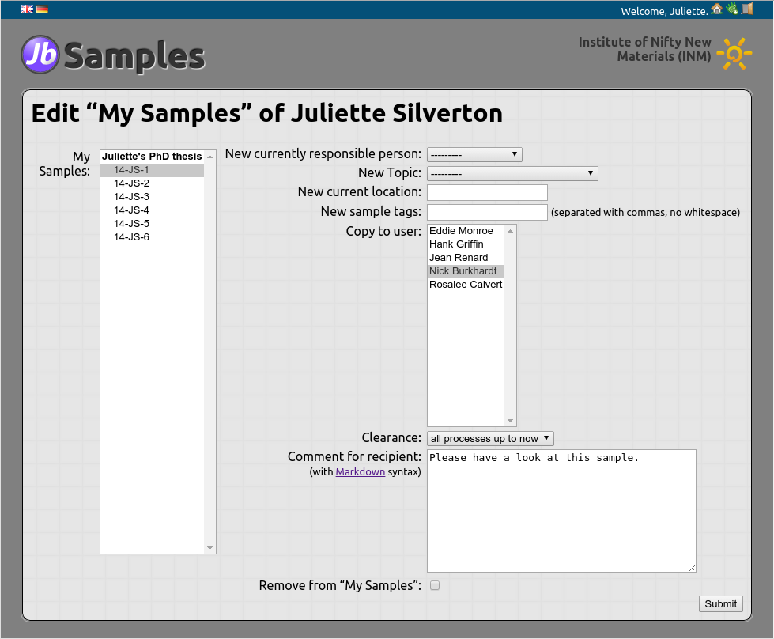{kind=link}
Juliette wants to show the sample 14-JS-1 to Nick so that he can have a look at it. Of course, Nick could look for the sample himself, but since the sample is in the topic “Juliette’s PhD thesis” and Nick isn’t, he cannot view the sample’s data sheet.
To send the sample to Nick, click on the pencil icon next to “My
samples” on the main menu page. Select the sample 14-JS-1 on the left. Then,
on the right, select Nick in the multiple choice “Copy to user” and enter, say,
“Please have a look at this sample” at “Comment for recipient”. Finally, set
“Clearance” to “all processes up to now”, because Juliette wants Nick to be
able to see the whole data sheet of 14-JS-1.
Nick: Technical service for others¶
Now login as n.burkhardt/12345. You can see 14-JS-1 under “My Samples”, and you can view its data sheet. The transfer has worked.
The newsfeed¶
Moreover, Nick has been notified by the transfer in “Main menu – Miscellaneous – Newsfeed”. There, he can also see that Juliette has files a new task for PDS measurements because Nick has the necessary permissions for the PDS. The newsfeed contains all important news for the respective user: Changes in their samples, new samples in their topics, samples transferred to them, new tasks, and much more.
The newsfeed is not really intended to be view in the browser. You may do so, but it is a little bit awkward. Rather, use a program capable of RSS feeds like Thunderbird. It is able to show you which entries in the feed are really new.
Tasks¶
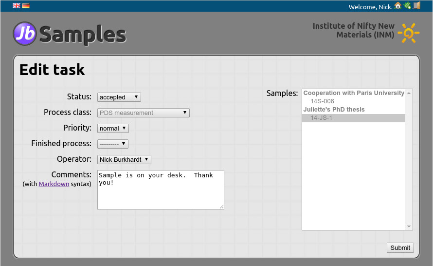{kind=link}
Since Nick has read that Juliette had filed a new PDS task, he visits the “Task lists” page himself. When doing this the first time, you have to select the PDS and click on “Submit” to make PDS tasks viewable to Nick.
In general, there are more than one person working at a setup like the PDS. Sometimes, people are absent (holidays, illness, etc). Therefore, it is not a-priori clear who will actually do a task, and the task must be explicitly accepted by someone and assigned to someone. In order to so this, click on the pencil icon to edit it. Set the “status” to “accepted” and “operator” to Nick himself. Juliette will get notified of this.
Nick can edit all PDS tasks by clicking on the pencil icon .
When Nick is actually doing the measurement, he may set the task’s status to
“in progress”, and after that, to “finished”. A finished task may even be
connected with the concrete PDS measurement.
Some of these steps are optional. It depends on your workflow. An operator might only set finished tasks to “finished” without further ado. Or he may use all of the features offered by task lists. Or anything in between.
Sean: The team leader¶
Login as s.renard/12345. Sean, being the team leader, has extended permissions. They are:
- View all samples
- Create new topics
- Change memberships in all topics
- Grant and revoke permissions to all setups
- Approve or reject sample claims
The Institute of Nifty New Materials only has two levels: The team leader and the rest. You may add further levels in your institution, and you may set the permissions in a different way. However, we’ve made the experience that complex permission policies are a burden that should be avoided.
{kind=link}